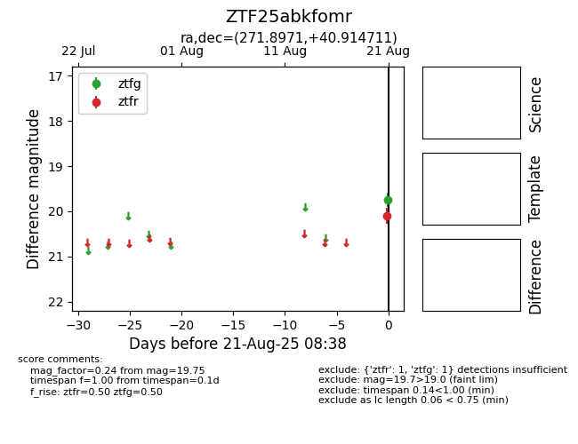

Target ZTF25abkfomr at 2025-08-21 08:38, see:
FINK: fink-portal.org/ZTF25abkfomr
Lasair: lasair-ztf.lsst.ac.uk/objects/ZTF25abkfomr
ALeRCE: alerce.online/object/ZTF25abkfomr
alt names
ZTF25abkfomr (ztf,alerce)
coordinates:
equatorial (ra, dec) = (271.8971,+40.91471)
galactic (l, b) = (67.8217,+25.24789)
photometry
last ztfg=19.75, ztfr=20.10
1 ztfg, 1 ztfr detections
